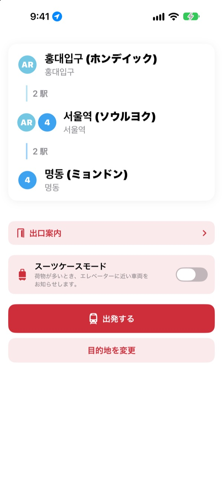
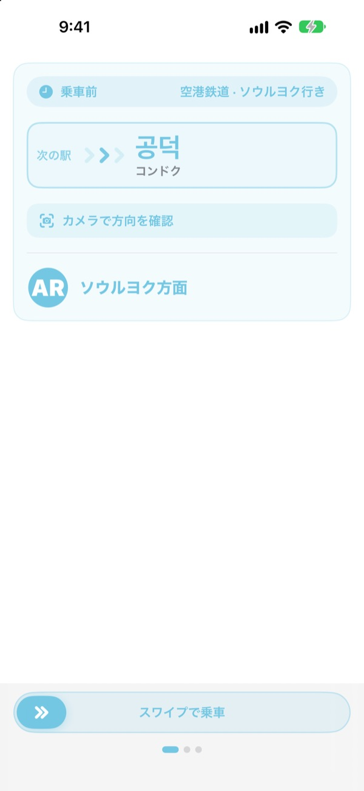
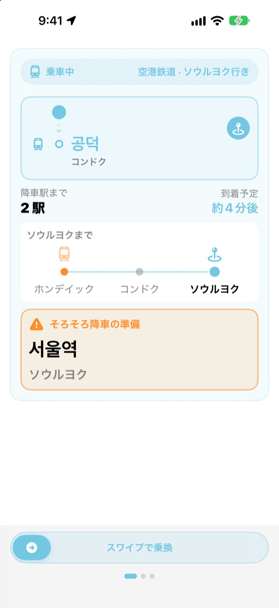
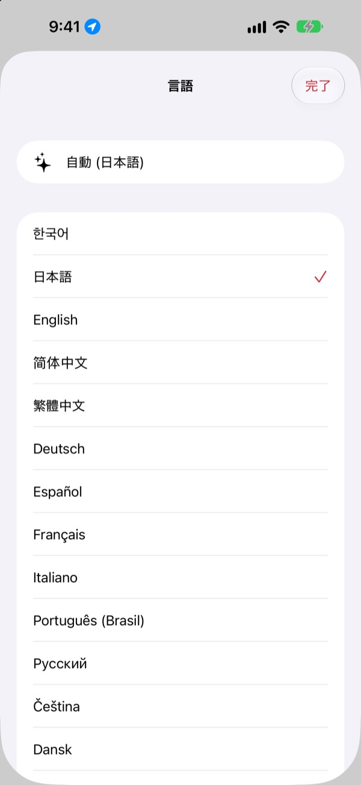

乗る方向から
降りる駅まで
出発駅と到着駅を選ぶだけで、乗るべき電車をホームの「○○行き」表示そのままで案内します。乗車中は今どの駅かを追いかけ、降りるタイミングでお知らせします。
ルート検索、乗る方向、リアルタイム到着情報は無料です。

乗ってみる
空港鉄道の弘大入口（ホンデイック）駅から出発します。降りる駅を選んで「出発する」を押すと、アプリと同じように乗る方向と降車のお知らせが順に表示されます。
ホームで、どちらの電車に乗ればいいか迷ったことはありませんか？
地図アプリが教えてくれるのは路線だけ。ホームにあるのは、知らない駅名が書かれた「○○行き」の案内板です。逆方向に乗れば何駅も戻ることになり、アナウンスを聞き逃せば降りる駅を通り過ぎてしまいます。KORAは乗る電車を案内板と同じ言葉で示し、降りる駅が近づくと先にお知らせします。
案内板と同じ言葉で案内
乗るべき電車を、ホームや車両に表示される「○○行き」そのままで示します。迷ったら、ホームの案内板や電車の行先表示にカメラを向けてください。今乗ろうとしている方向が正しいかどうか、すぐにわかります。
文字認識はすべてiPhoneの中で行います。

降りる駅を乗り過ごさない
リアルタイム到着情報、GPS、電車の発車と停車、車内アナウンスを組み合わせて、今どの駅かを追いかけます。降りる駅が近づくと「そろそろ降車の準備」、到着すると「今降りてください!」を振動でお知らせします。
ロック画面とDynamic Islandでも進み具合を確認できます。

23の言語、駅名は原文のまま
アプリ全体を23の言語で使え、最初はiPhoneの言語設定に合わせます。駅名はハングルと一緒にカタカナ、漢字、または案内板のローマ字表記で表示するので、ホームですぐに照らし合わせられます。

はじめかたは3ステップ
- 1
出発駅を決める
GPSで最寄り駅を探すか、自分で選びます。
- 2
到着駅を選ぶ
乗り換え、駅数、乗るべき電車がすぐに表示されます。
- 3
「出発する」を押す
降りるタイミングを画面と振動でお知らせします。
各権限の使いみち
- 位置情報
- 最寄り駅を探す
- カメラ
- ホームの案内板や電車の行先表示を読み取り、方向を確認
- マイクと音声認識
- 車内アナウンスから駅名と開くドアの側を聞き取る
- モーションとフィットネス
- 電車の発車と停車を検知し、現在の駅をより正確に
どの権限も任意です。許可しなくても駅を自分で選べば、ルート案内と降車のお知らせを使えます。位置情報、カメラ、アナウンスは端末内だけで処理し、録音・保存・送信はしません。
ルート案内はずっと無料、乗車ガイドはKORA Pro
無料
- ルート検索と乗り換え案内
- 乗るべき電車の「○○行き」表示
- リアルタイム到着情報
- カメラで方向チェック
- 乗車中の現在駅と降車案内の画面
- 最初の3回の移動はPro機能もすべて
KORA Pro
- すべての移動でロック画面の案内、アナウンス認識、降車の振動通知
- 出口案内：ソウル地下鉄1〜8号線の出口ごとの周辺スポット
- 終電通知：1〜9号線の終電時刻
- スーツケースモード：1〜8号線でエレベーターに近い車両
一度の購入でずっと使えます。サブスクリプションではありません。
無料の回数を使い切っても乗車は止まりません。画面上の進み具合はそのままで、ロック画面の案内、アナウンス認識、振動だけが休みます。
よくある質問
最寄り駅が見つからない、違う駅が表示される
設定 > プライバシーとセキュリティ > 位置情報サービス > KORA で「このAppの使用中」を選び、「正確な位置情報」をオンにしてください。地下や大きな建物の中ではGPSが不正確になることがあるので、画面上部の現在駅カードをタップして駅を自分で選んでください。位置情報を許可しなくてもすべての機能を使えます。
カメラで方向チェックはどう使いますか？
ルートが表示されたらカメラで方向チェックを開き、ホームの案内板や電車の行先表示（「○○行き」）を画面いっぱいに写します。ハングルの表示を写すといちばん正確です。暗い、遠い、斜めすぎるときは、少し近づいて正面から写してください。結果は目安なので、迷ったら駅の案内板もあわせて確認してください。
リアルタイム到着情報が表示されません
リアルタイム到着情報はソウル市のオープンデータ広場が提供しており、インターネット接続が必要で、主に首都圏の路線で利用できます。オフラインのときやその路線にリアルタイム情報がないときは、時刻表による推定とGPS、加速度センサーに自動で切り替えて案内を続けます。ルート検索はインターネットなしでも使えます。
降車のお知らせが少し早い、または遅い
地下区間ではGPSの電波が弱く、現在駅の推定が遅れることがあります。マイクを許可すると車内アナウンスで位置を補正し、より正確になります。お知らせは目安なので、アナウンスと駅の案内板もあわせて確認してください。
言語を変えるには？
最初はiPhoneの言語に合わせます。メイン画面の駅カード（現在駅または到着駅）を長押しすると言語選択が開き、23の言語から選べます。
ロック画面にライブアクティビティが表示されません
設定 > アプリ > KORA（以前のiOSでは 設定 > KORA）で「ライブアクティビティ」がオンになっているか確認してください。乗車案内を始めると表示され、アプリを完全に終了すると一緒に終わります。Dynamic Islandは対応するiPhoneでのみ表示されます。
どの都市に対応していますか？
ソウル首都圏（ソウル・京畿・仁川。GTX-A、空港鉄道、新盆唐線、軽電鉄を含む）、釜山、大邱、光州、大田の約930駅です。駅選択画面の上にある地域チップで都市を切り替えられます。
韓国に行く前に試せますか？
はい。出発駅と到着駅を自分で選べば、どこからでもルート、乗り換え、乗る方向を確認できます。
KORA Proはサブスクリプションですか？
いいえ。一度の購入でずっと使える買い切りで、ファミリー共有にも対応しています。アプリを入れ直したときは、Pro画面の「購入を復元」をタップしてください。
個人情報はどう扱われますか？
アカウント登録も広告もありません。位置情報、カメラ、アナウンス認識はすべて端末内で処理し、保存も送信もしません。アプリ改善のために匿名の利用統計だけを収集しています。
アクセシビリティに対応していますか？
VoiceOverと大きな文字サイズに対応しています。アクセシビリティに関するご要望もお気軽にお寄せください。
駅が見つからない、駅名がおかしいなど、ご質問は mizzking75@gmail.com までお送りください。アプリのバージョン、iPhoneの機種、利用した駅を書いていただくと、早く確認できます。